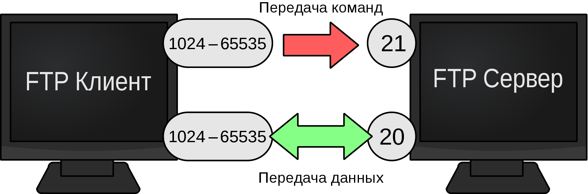

FTP (англ. File Transfer Protocol) — протокол передачи файлов по сети, является одним из старейших прикладных протоколов, появившихся задолго до HTTP, и даже до TCP/IP, в 1971 году; в первое время он работал поверх протокола NCP. Он и сегодня широко используется для распространения ПО и доступа к удалённым хостам. В отличие от TFTP, гарантирует передачу (либо выдачу ошибки) за счёт применения квотируемого протокола.
Протокол построен на архитектуре «клиент-сервер» и использует разные сетевые соединения для передачи команд и данных между клиентом и сервером. Пользователи FTP могут пройти аутентификацию, передавая логин и пароль открытым текстом, или же, если это разрешено на сервере, они могут подключиться анонимно. Можно использовать протокол SSH для безопасной передачи, скрывающей (шифрующей) логин и пароль, а также шифрующей содержимое.
Первые клиентские FTP-приложения были интерактивными инструментами командной строки, реализующими стандартные команды и синтаксис. С тех пор были разработаны графические пользовательские интерфейсы для многих используемых по сей день операционных систем. Среди этих интерфейсов как компоненты программы общего веб-дизайна вроде Microsoft Expression Web, так и специализированные FTP-клиенты (например, FileZilla).
Достаточно яркая особенность протокола FTP в том, что он использует множественное (как минимум — двойное) подключение. При этом один канал является управляющим, через который поступают команды серверу и возвращаются его ответы (обычно через TCP-порт 21), а через остальные происходит собственно передача данных, по одному каналу на каждую передачу. Поэтому в рамках одной сессии по протоколу FTP можно передавать одновременно несколько файлов, причём в обоих направлениях. Для каждого канала данных открывается свой TCP порт, номер которого выбирается либо сервером, либо клиентом, в зависимости от режима передачи.
Протокол FTP (как и HTTP) имеет двоичный режим передачи, что сокращает накладные расходы трафика и уменьшает время обмена данными при передаче больших файлов.
Начиная работу через протокол FTP, клиент входит в сессию, и все операции проводятся в рамках этой сессии (проще говоря, сервер помнит текущее состояние). Протокол HTTP ничего не «помнит» — его задача — отдать данные и забыть, поэтому запоминание состояния при использовании HTTP осуществляется внешними по отношению к протоколу методами.
FTP работает на прикладном уровне модели OSI и используется для передачи файлов с помощью TCP/IP. Для этого должен быть запущен FTP-сервер, ожидающий входящих запросов. Компьютер-клиент может связаться с сервером по порту 21. Это соединение (поток управления) остаётся открытым на время сессии. Второе соединение (поток данных), может быть открыт как сервером из порта 20 к порту соответствующего клиента (активный режим), или же клиентом из любого порта к порту соответствующего сервера (пассивный режим), что необходимо для передачи файла данных. Поток управления используется для работы с сессией — например, обмен между клиентом и сервером командами и паролями с помощью telnet-подобного протокола. Например, «RETR имя файла» передаст указанный файл от сервера клиенту. Вследствие этой двухпортовой структуры FTP считается внешнеполосным протоколом, в отличие от внутриполосного HTTP.
Протокол определён в RFC 959. Сервер отвечает по потоку управления трёхзначными ASCII-кодами состояния с необязательным текстовым сообщением. Например, «200» (или «200 ОК») означает, что последняя команда была успешно выполнена. Цифры представляют код ответа, а текст — разъяснение или запрос. Текущая передача по потоку данных может быть прервана с помощью прерывающего сообщения, посылаемого по потоку управления.
FTP может работать в активном или пассивном режиме, от выбора которого зависит способ установки соединения. В активном режиме клиент создаёт управляющее TCP-соединение с сервером и отправляет серверу свой IP-адрес и произвольный номер клиентского порта, после чего ждёт, пока сервер запустит TCP-соединение с этим адресом и номером порта. В случае, если клиент находится за брандмауэром и не может принять входящее TCP-соединение, может быть использован пассивный режим. В этом режиме клиент использует поток управления, чтобы послать серверу команду PASV, и затем получает от сервера его IP-адрес и номер порта, которые затем используются клиентом для открытия потока данных с произвольного клиентского порта к полученному адресу и порту. Оба режима были обновлены в сентябре 1998 г. для поддержки IPv6. В это время были проведены дальнейшие изменения пассивного режима, обновившие его до расширенного пассивного режима.
При передаче данных по сети могут быть использованы четыре представления данных:
Для текстовых файлов предоставлены различные форматы управления и настройки структуры записи. Эти особенности были разработаны для работы с файлами, содержащими Telnet или ASA-форматирование.
Передача данных может осуществляться в любом из трёх режимов:
FTP-аутентификация использует схему имя пользователя/пароль для предоставления доступа. Имя пользователя посылается серверу командой USER, а пароль — командой PASS. Если предоставленная клиентом информация принята сервером, то сервер отправит клиенту приглашение и начинается сессия. Пользователи могут, если сервер поддерживает эту особенность, войти в систему без предоставления учётных данных, но сервер может предоставить только ограниченный доступ для таких сессий.
Хост, обеспечивающий FTP-сервис, может предоставить анонимный доступ к FTP. Пользователи обычно входят в систему как «anonymous» (может быть регистрозависимым на некоторых FTP-серверах) в качестве имени пользователя. Хотя обычно пользователей просят прислать адрес их электронной почты вместо пароля, никакой проверки фактически не производится. Многие FTP-хосты, предоставляющие обновления программного обеспечения, поддерживают анонимный доступ.
Специально для работы FTP-протокола через межсетевые экраны было сделано расширение NAT, называемое FTP-ALG, позволяющее транслировать входящие соединения от сервера к клиенту через NAT. В процессе такого соединения FTP-ALG подменяет передаваемые данные от клиента, указывая серверу истинный адрес и порт, с которым сможет соединиться сервер, а потом транслирует соединение от сервера от этого адреса клиенту на его адрес. Несмотря на все меры и нововведения, принятые для поддержки FTP-протокола, на практике функция FTP-ALG обычно отключается во всех роутерах и маршрутизаторах с целью обеспечения дополнительной безопасности от вирусных угроз.
FTP обычно передаёт данные при наличии соединения сервера с клиентом, после того как клиент отправил команду PORT. Это создаёт проблему как для NAT, так и для брандмауэров, которые не разрешают соединения из интернета к внутренним хостам. Для NAT дополнительной проблемой является то, что представление IP-адресов и номера порта в команде PORT относится к IP-адресу и порту внутреннего хоста, вместо публичного IP-адреса и NAT-порта. Существует два подхода к этой проблеме. Первый заключается в том, что FTP-клиент и FTP-сервер используют команду PASV, которая вызывает соединение для передачи данных, установленное от клиента к серверу. Второй подход — изменение для NAT значений команды PORT с помощью шлюза на прикладном уровне.